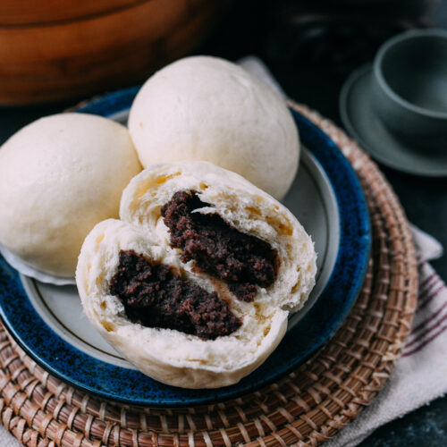

RED BEAN BUN
(팥 호빵 )

Red Bean Bun (팥 호빵 ) is a warm snack that is sold throughout South Korea
Ingredients
- 2½ cups - All Purpose Flour
- 1 cup - Sweet Red Bean Paste
- 1 cup - Warm Water
- 2 Tbsp - Sugar
- 1 Tbsp Butter
- 2¼ tsp - Active Dry Yeast
- 1 tsp - Baking Powder
- 1 tsp - Salt
Steps
- Add 1 cup of warm water, 2 Tbsp of sugar, and 2¼ tsp active dry yeast to a mixing bowl of a mixer.
- Then add 2½ cups all-purpose flour, 1 tsp baking powder, 1 tsp salt, and 1 Tbsp softened butter.
- Mix the ingredients and knead the dough with a mixer or your hands for about 5 minutes. You can start your mixer with a slow speed and gradually increase the speed after all the ingredients are mixed well enough together. If you knead the dough by hand, you might have to do it a little longer, until your dough gets nice and soft like this.
- After kneading the dough, cover it with plastic wrap and let it sit for about 10 minutes. While the dough is resting, we can prepare the other things.
- For the filling, we need about 1 cup of sweet red bean paste called “patang-geum”, in Korean. You can use pre-made ones from a store like this one.
- Or you can try my homemade red bean paste recipe. You can check the recipe here. I will divide the bean paste into 8 portions. One portion is about 2 Tbsp which is about 1 oz.
- Take each portion of the bean paste and make it into a little ball. Do the same thing for the rest of it to make 8 red bean balls.
- Start to boil water for a steamer.
- After 10 minutes, take out the dough and divide it into 8 pieces. Divide it half, then in half again, and finally divide them one more time in half. Now I have 8 almost even-sized dough pieces. Quickly form each piece of the dough into a ball. It doesn’t have to be perfect, but just good enough to get a smooth surface on them.
- Next I will prepare some wax paper to put on the bottom of each bun. This will help to prevent the bread from sticking to the steamer. Cut 3 4-inch wax paper strips. Then combine the 3 papers and fold them into 3 pieces like this. Cut through the folds with a knife, then you will have 9 squares.
- Flatten 1 dough ball to make some space for the bean paste ball.
- Place a bean paste ball in the center of the flattened dough.
- Wrap the red bean paste with the dough and seal the dough tightly. This way, the bean paste will not come out while you are steaming the buns. (Please check how to do this in the video.)
- Put the sealed part face down on the wax paper.
- Do the same thing for the rest of the dough to make 8 buns.
- Wrap your lid for the pot with a kitchen towel. This helps create a smoother surface on the steamed buns. While the water is boiling, the steam can turn into water and drop onto your buns and make them wrinkly. If you use this method, you will get beautifully steamed buns.
- When the water for the steamer is boiling, place 3 or 4 of the buns in the steamer. Make sure the buns have some spaces between them because they get bigger later.
- Cover the lid and steam for about 15 minutes on high.
- After 15 minutes, you can see your buns became bigger and fluffy. Take the steamer off the stove and let it cool a little bit.
- Take out your steamed buns. Steam the rest of your buns in the same way. Wow, it looks so beautiful and delicious. I want to give you some to try right now.
- Let's look inside. It steamed nicely and the ratio for the bread and the red bean paste looks just right.